CMSC 412
Class 15
March 28, 1996 There are 9 slides in this lecture.
 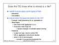
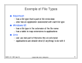
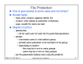
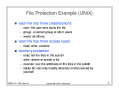
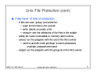
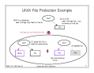
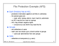
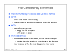
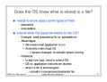
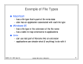
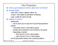
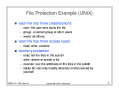
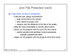
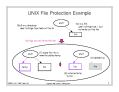
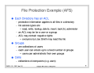
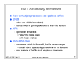
Click here to go back.
You can also download the PostScript file for these slides by clicking on one of the following:
You can also download the Gzipped PostScript and PDF files for these slides.
Copyright 1996 Jeffrey K. Hollingsworth. All rights reserved.